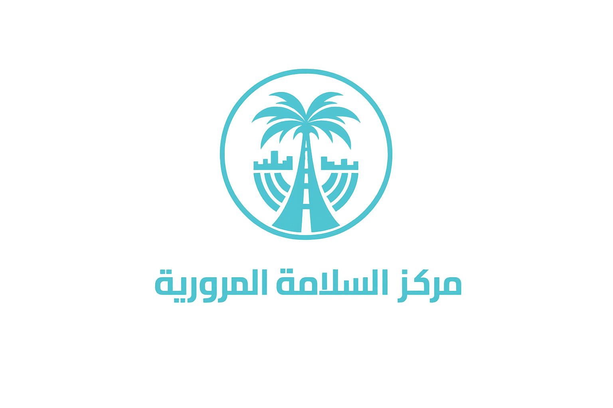
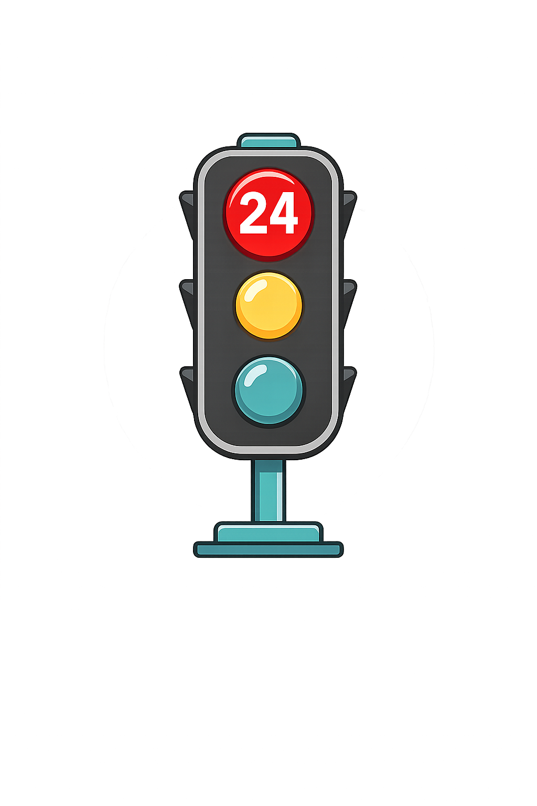
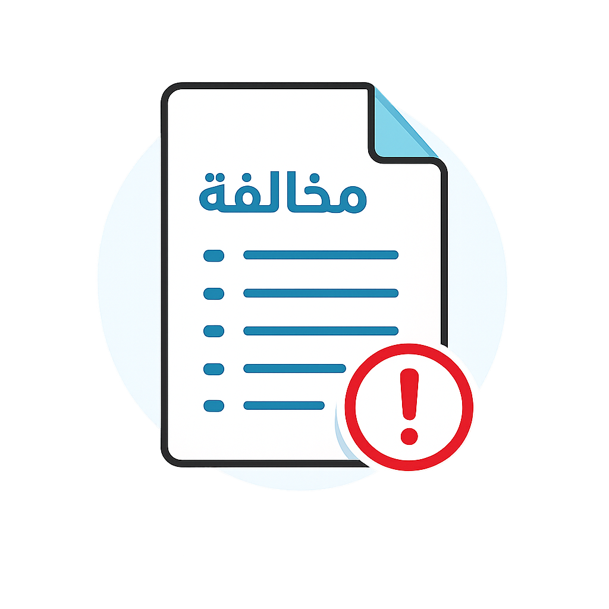
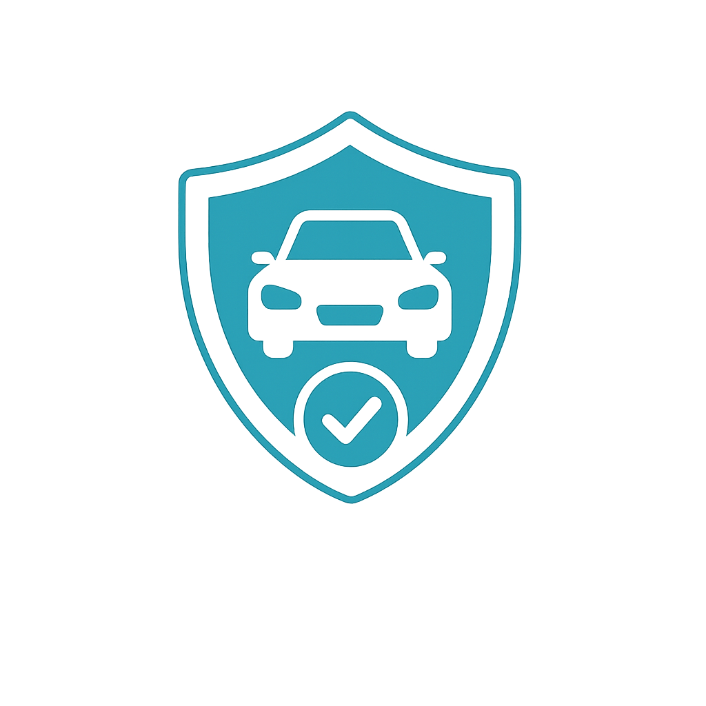

الأقسام التعليمية

نظام النقاط المرورية
تعرّف على طريقة احتساب النقاط والعقوبات المترتبة عليها.

المخالفات المرورية
شرح أشهر المخالفات وكيفية تجنبها.

اللوحات المرورية
تعلّم جميع اللوحات التنظيمية والتحذيرية والإرشادية.

القيادة الآمنة
مهارات عملية تساعدك على القيادة بثقة وأمان.

اختبر معلوماتك
اختبارات تفاعلية لتقييم مستواك بعد كل درس.